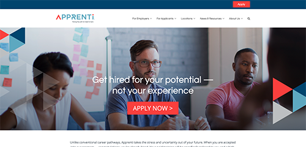

Madison Woo
2020 Apprenti Website Refresh
The Client
Based in Seattle, WA, Apprenti Careers is a national tech apprenticeship program that aims to bridge the diversity gap in today’s tech industry.
The Problem
Up until 2020, Apprenti’s website content and structure were designed to target job seekers- those who are looking to apply to the Apprenti apprenticeship program. Apprenti’s old site included more CTA’s pointing users to apply pages, featured content geared towards answering application questions, and overall content was focused on attracting apprenticeship applicants.
However, with a recent shift in business focuses, the organization’s goal was to now target what they call ‘hiring partners’. Hiring partners are tech companies around the country who look to hire Apprenti’s apprentices, and would eventually hire them as permanent employees. The problem was that the old Apprenti site was not geared toward generating more hiring partner leads and its content did not target hiring partner companies.
The business development team at Apprenti asked for the new site to:
- Provide more CTA’s on how to become a Apprenti Hiring Partner
- Include new website copy that provides more information on the apprenticeship program through the lens of a potential hiring partner (ie. how the hiring process works with Apprenti, how it benefits the company, why they should hire Apprenti apprentices, and something that illustrates the widening talent gap in the tech industry and how Apprenti solves their problem)
- Provide more CTA’s on how to become a Apprenti Hiring Partner
- Continue to be a resource for those looking to become apprentices by providing information on the application process and the apprenticeship program.
The Process
Phase 1: Building the Team
The first step we took was to designate project roles and who in the Apprenti organization would be needed as a key resource to complete the project. Here are the project members, their roles, and other key resources:
- Madison Woo (designer) | To help build a site map, wireframe mockups, and execute website build.
- Heather Trestrail (Marketing Director) | Revamp copy and assist in building site map
- Amy Fawcett (Sr. Marketing Operations Manager) | Assist in building the site map, assist in executing website build
- Karen Manuel (Director of Business Operations, Apprenti Careers) | Provide integral content in website revamp, approve content, decision-maker.
Phase 2: Generating/collecting Content, Building Early Sitemap
In the second step of the process, we needed to create a very basic framework of the site’s new structure using post its to visually construct the site’s new structure.
Some notable changes we made to the website’s structure:
- Added a locations drop-down in the main navigation to accommodate for Apprenti’s many nationwide locations that would house specific information for each state.
- Added a locations drop-down in the main navigation to accommodate for Apprenti’s many nationwide locations that would house specific information for each state.
- Added a new consulting page, which advertises Apprenti’s new hiring consulting program for tech companies
- Added a Know the Numbers page, which was meant to show hiring partners the widening tech talent gap and how Apprenti is built to solve the problem.
One thing to note on the new homepage structure is that we decided to create a homepage CTA that targets both hiring partners and apprenticeship applicants and changed the CTA language to “Building the next generation of tech talent”, which sounds like it’s speaking more to tech companies rather than applicants.
We added a section labeled “What Apprenti Does for You” and a footer CTA that leads to a contact form to the Apprenti business development team. The footer CTA is the same throughout the entire site, so it could better drive hiring partners to connect with the Apprenti business development team. Lastly, we included a national map that highlights where Apprenti is active and includes language that shows that Apprenti works in many different states and can go where hiring partners need them to be.
In this phase, we worked heavily with our marketing director, senior marketing manager, and Apprenti’s business development director to finalize information and copy to be placed in the sitemap to eventually be executed in the website build.
Phase 3: Building Wireframes and other Visual Elements
After high-fidelity wireframes were approved, the website build began in WordPress. The website was officially launched on April 1.
The Results
Increased website traffic by 43%, however, data is still being collected on what demographic is visiting the site, and how many leads the new site has helped generate for the Apprenti business development team.